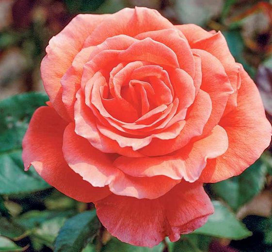
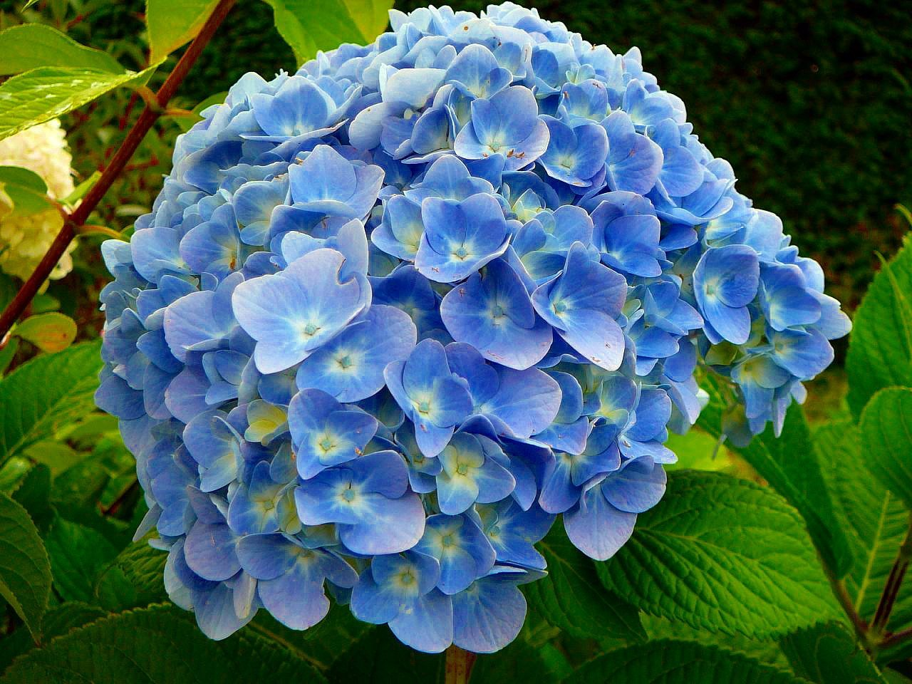
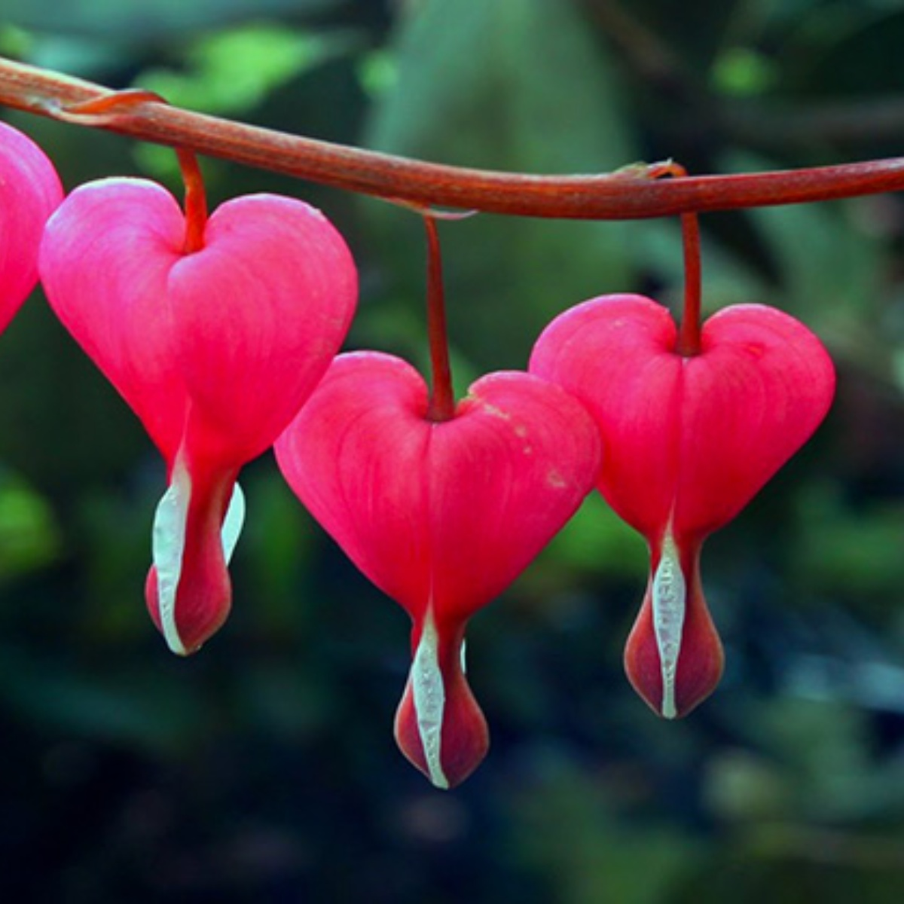
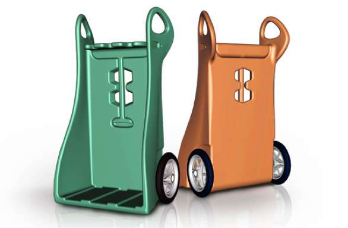
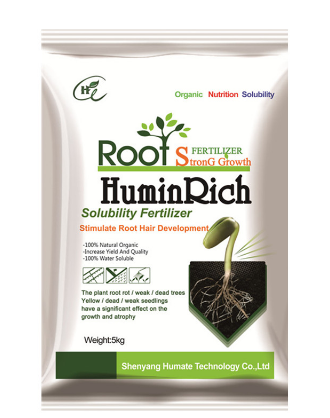

Diario de la naturaleza
Sobre nosotros:
Bienvenidos, en esta sección te explicaremos de lo que trata nuestra página, está enfocada en la botánica, más que nada en la jardinería, en esta página tenemos foros donde se pueden hacer preguntas acerca de sus jardines y plantas, concursos los cuales pueden apuntarse todas las personas y los premios valen la pena, de igual manera información sobre las plantas que buscas y sobre cómo empezar a entrar al mundo de la jardinería, dando consejos sobre con que plantas puedes empezar y como cuidarlas además de blogs sobre cómo cuidar el medio ambiente.
Concurso de jardineria anual
Cada año relizamos un concurso de jardineria, escogemos una flor y la quidamos por 6 meses depues tomamos fotos y las compartimos, el ganador sera la personsa con la planta mas bella, fresca y bien quidada.
Nuestros premios del prmer lugar son un liston dorado de primer lugar y un cupon de 200 dolares, para el segundo lugrar tenemos un liston azul de segundo lugar y un cupon de 150 dolares y finalmente en el tercer lugar un liston verde y un cupon de 100 dolares., ademas los 5 mejores lugares seran exividos en la pagina principal del sitio hasta el siguiente año
Como participar:
- Mandanos tu nombre y el tipo de concurso en el cual te gustaría participar.
- Ingresar tu correo electrónico para poder enviarte retroalimentación en cuanto al concurso.
- Enviarnos la foto de tu jardín, plantas, setos o flores depende en que rama del concurso quieras ingresar.
- Seguirnos en todas nuestras redes sociales para estar al tanto de nuestro veredicto final.
Flores ganadoras
Las siguientes fotografías fueron cortesia de nuestros ganadores de este año en la categoría flores, a continuación mostramos el orden de los mismos y sus premios junto sus nombres.
- Corazón sangrante: Primer lugar, foto cortesía de Maria Jimenez. Ganadora del listón dorado y el cupón de 200 dolares.
- Hortensia: Segundo lugar, foto cortesía de Luis Sandoval. Ganador del liston azul y el cupón de 150 dolares.
- Rosa: Tercer lugar, foto cortesía de William Alvarado. Ganador del liston verde y el cupón de 100 dolares.
¡Muchas gracias a todos por participar este año! Nos vemos al siguiente que le tocará a la categoría de los jardines, esperamos con ansias poder ver los participantes.
 Rosas: La rosa es considerada la flor más bonita del mundo, por ello se dice que es ‘la reina del jardín’. Es una de las flores más famosas a nivel internacional, las hay en diferentes tamaños y colores y, además estánsúper repartidas por todo el mundo. Son flores que sirven para decorar eventos, para crear perfumes… ¡y mucho más! |
Hortencias: Estas flores son nativas del sur de Asia y, también son unas flores muy conocidas a nivel mundial. Es una flor de indudable belleza y muy utilizada también en decoración. Además, la hortensia es una de las flores preferidas para la creación de bouquets puesto que aporta mucho volumen y textura. |
 Flor Corazón sangrante El nombre que se les da en Norteamérica bleeding heart (corazón sangrante), se aplica a numerosas especies del género debido a la apariencia de las flores rosas, que asemejan a un corazón con una gota de sangre descendiendo. |
QnA
Guia para el jardinero novato:
preguntas frecuentes
¿Como inicio mi jardin?
R: Deja los miedos atrás
Lo primero que hay que hacer es eliminar de nuestra cabeza que no podemos hacerlo.
Observa y elimina
Antes de ponerte a plantar, lo primero que hay que hacer es observar las condiciones actuales de nuestro jardín.
Nada mejor que comenzar de cero. Cuando uno tiene un espacio vacío, es más fácil rellenarlo poco a poco con las plantas que queremos.
Establece un plan de acción
No trates de hacerlo todo a la vez. Una vez tengas el espacio limpio, es cuestión de usar un poquito de imaginación.
Compra plantas que se adapten
Dependiendo de la zona donde vivas, habrá plantas que mejor se adapten a las condiciones de clima de tu área.
Combina texturas y colores
Algunas plantas florecen todo el año, pero otras en épocas específicas.
Plantas de sombra versus de sol
Otro detalle de suma importancia es asegurarte de comprar plantas dependiendo del área.
Tendencias
Estas son las nuevas tendencias segun pasises como america y europa
Herramientas
|
Semillas |
Fertilizante
|
 by Food52.jpg)